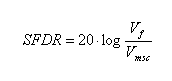

Spurious Free Dynamic Range (SFDR)
Spurious Free Dynamic Range (SFDR) is the ratio between the voltage amplitude of the maximum spurious component and the voltage amplitude of the fundamental.

Vmsc is the voltage amplitude of the maximum spurious component.
Vf is the voltage amplitude of the fundamental.